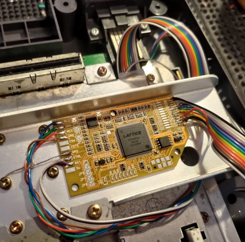
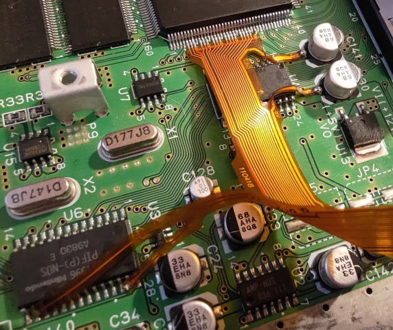
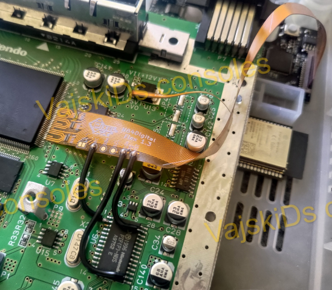
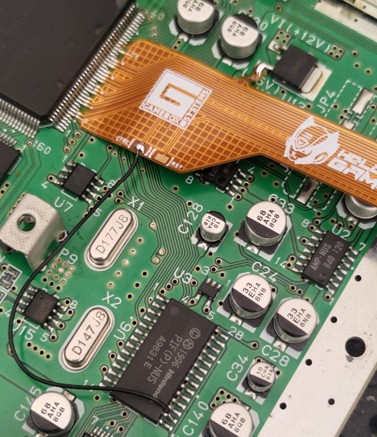

Everdrives mostly negate the need for region mods like the 'UltraPIF' on the Nintendo 64, we suggest you do your own research though. Perhaps you want to use genuine cartridges that are of a different region than the console? In that case, you'll need to region mod your console, and possibly remove physical barriers that stop you from inserting the cartridge in the foreign console. We will happily do this for you, if you provide the kit/s. As per usual, contact us for any prices not listed.
If have an early 'easily RGB moddable' system and you're only chasing RGB output, I am happy to install my own Super-1 RGB bypass or a bypass board of your choice. In this case, it isn't really
bypassing anything, rather, it's amplifying the already existent analogue RGB signals to 'drive' them through the cable and into the set.
For any other model of Nintendo 64, and in fact, all models, you can use Tim Worthington's RGB mod,

Price for installation is $129 + return post, we will need to discuss cable options and your use case (it also outputs component YPbPr!)
As for pure digital internal HDMI solutions, these have never being easy to obtain. started off as group buy ins on long before it became a commercial product, people would wait well over a year after laying down cash to get their hands on these kits. They are still only able to be obtained in group buys though. 
Then came the  These are are released in batches from time to time, and you'll have to wait in a que for many hours to get your hands on one. They are also quite expensive, but they are probably the best solution for HDMI output on the N64. Don't risk wrecking your kit and/ or console, send it in for the installation
Finally, we have the more budget friendly approach. It of course lacks many features though and you'll have to do your own research to see if the product suits your needs.  The 64HD uses more readily available parts, and are chaper to produce, so the end result is a cheaper pure digital solution. Again, don't risk wrecking your kit and/ or console, send it in for the installation
Internal HDMI kit installations are charged at a flat rate of $179 + return post.
A power supply recap is $40 and a mainboard recap is $80. These are optional, but recommended.
If you want a different coloured power LED or have questions , please reach out.